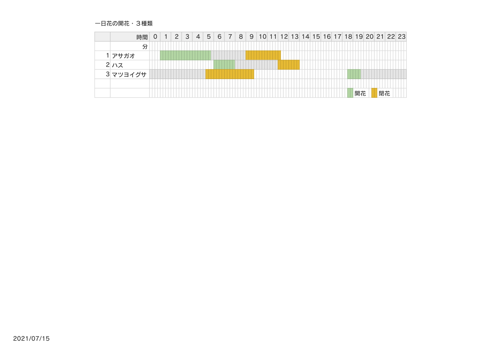
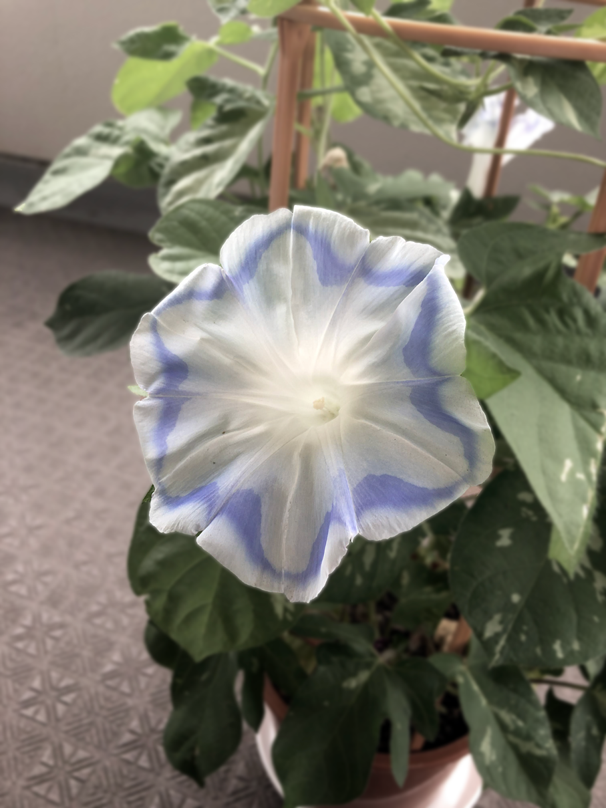

開花で時間の経過を知る。
花時計について
制作の流れ
花時計について
１日（24時間）のうちに花が咲き、しぼむ花があります。それを一日花と呼びます。それぞれの花は決まった時刻で咲く概日リズム（体内時計）を持っています。一日花を咲く時間の早い順に並べていくと、大まかな時刻を知ることができます。それを「花時計」といいます。
花時計を初めて作ったのはスウェーデンのリンネ(
1708年〜78年）という博物学者、生物学者、植物学者です。リンネは分類学の父として知られています。1750年、植物の花の開閉時刻を観察し、１時間単位で咲いたりしぼんだりする花をあげた「ホロジウム・フローラ」という本を出版しています（十亀 1996)。

リンネの花時計
日本版花時計
リンネの花時計は彼がいた場所で観測された花なので、日本でみられる花とは違います。日本の植物学者の十亀好雄さんが植物を観察し、まとめた本があります。このデータをもとに時計を作ることにしました。
明石・神戸における一日花の花時計（十亀 1996 p.134-135)
選んだ花について
- 
アサガオ、ハス、マツヨイグサの開花から閉花の時間を表した図
- 自宅で育てたアサガオ（2020年8月撮影）">
朝の花：アサガオ
自宅で育てたアサガオ（2020年8月撮影） 
昼の花：ハス
- （2021年6月撮影）">
夜の花：マツヨイグサ
（2021年6月撮影）
最小限で１日がわかるように、朝、昼、夜にそれぞれ開花する花を３つに絞りました。
- アサガオ
- ハス
- マツヨイグサ
それぞれの開花の過程を並べると、大まかな時間がわかります。
カタチを決める

コパル社製 1970年代のパタパタ時計

盤面の駆動の様子
それぞれの開花の過程を並べて表示すると、大まかな時間がわかります。 これを形にするには、「パタパタ時計」の形式を選びました。 パタパタ時計は盤面の自由性があり、花の過程を描くのにぴったりだと思いました。 既存のパタパタ時計を借りて、盤面を作りました。 60枚で一日経過するようにしたので24分に１枚めくれます。
実制作
盤面の素材とデータの作り方、印刷の仕方を紹介します。
素材の選定
盤面の素材はPETを選びました。
背景に空の色を入れて、より時間の経過を際立たせるため、白よりも連続性のある「透明」を使うと決めました。
以下の条件を満たす素材を探し、試しました。
- 透明であるか
- 0.5mm厚以下であるか
- レーザー加工が可能
- UV印刷が可能
| 素材名/加工 | レーザー切断 | UV | 透明 | 厚さ0.2-0.5mm | 価格 | |
|---|---|---|---|---|---|---|
| 1 | アクリル板 | ◯ | ◯ | ◯ | 0.5 | 高価（参考値:550mm*440mm 3810円) |
| 2 | ポリスチレン（プラ板） | △（端が溶ける） | ◯ | ◯ | 0.2-0.5 | 安価 |
| 3 | PET（ポリエチレンテレフタラート） | △（焦げる） | ◯ | ◯ | 0.5 | 安価 |
| 4 | ポリカーボネート(PC) | △（黄変色する） | ◯ | ◯ | 0.5 | 安価（300*200 219円) |
| 5 | PLA樹脂 | ◯ | ◯ | × | × | 板状が少ない（主にフィラメント） |
| 6 | ABS樹脂 | ◯ | ◯ | × | 0.5 | 安価 |
| 7 | ポリ塩化ビニル（PVC） | ×（有毒ガス） | ◯ | × | 0.5 | 安価 |
| 8 | ポリプロピレン | ◯ | × | ◯ | 0.2 | 安価 |
| 9 | ポリエチレン | ◯ | × | ◯ | 0.5 | 安価 |
| 10 | ガラス（ソーダ石灰ガラス） | ×（溶ける） | × | ◯ | × | 高価 |
レーザーカット 実験
レーザーカッターを使い、盤面の素材を検討しました。
- PET
- PS
- タント紙
レーザーカット 本制作
レーザーで切り出します。一台につき180枚必要です。PET板450×600で80枚切り出すことができます。
工夫点
レーザーにもクセがあり、裏面が焦げ付くという問題がありました。それを防ぐために幅広のマスキングテープを貼り、カットし、後から剥がすという方法を取りました。そうすると綺麗にコゲがつかずにカットすることができました。
UVプリント 本制作①
制作手順
- 素材の置く位置を印刷。
- 背景色を印刷。
- シルエット（ベタ塗り）を印刷。
- ホワイト（ベタ塗り）を印刷。
- カラーを印刷。
- クリアを印刷
透明の素材を選んだため、裏うつりの問題がありました。両面をカラーだけで印刷すると、色が混ざってしまい綺麗に見えません。
裏うつりを逆手に取って、背景に利用しようと決めました。背景に見える色を印刷します。そして前面のカラーが映えるようにホワイトをしきます。そしてカラーを印刷します。その上から遠近感を出すためクリアを印刷します。それを裏面にも同じく行います。
筐体への取り付け
こうして印刷したものを筐体にくっつけます。この筐体を使い、実際に時計として動くかを撮影しました。
実際に時計として24分に一回めくれるものを作ることを目指しています。
筐体設計:石田花恋（鳴川研）
筐体試作
ボタン実装・電池での実装
１回ボタンを押すと１枚めくれ、長押しすると一周めくれるようにしてあります。アルディーノと電池、モーターが内部にあります。
筐体設計:石田花恋（鳴川研）